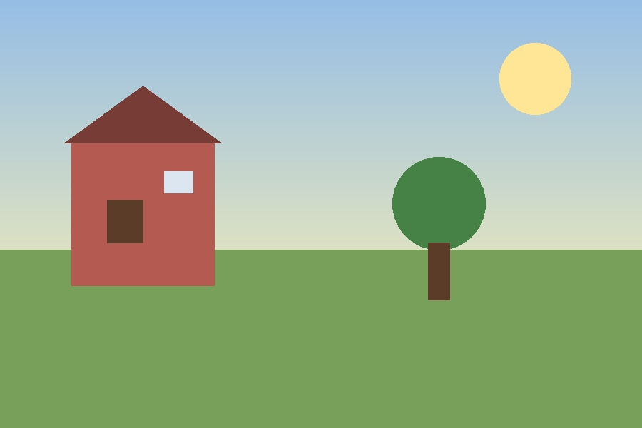
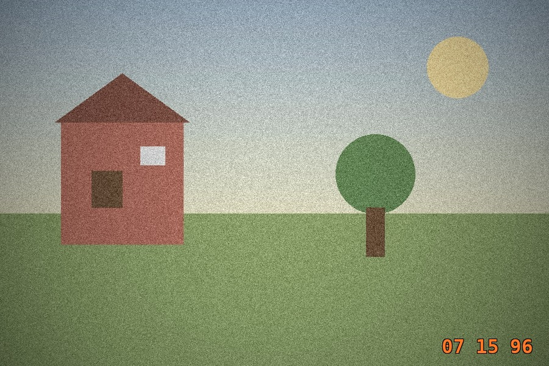
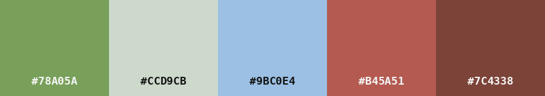

Estudante de Análise e Desenvolvimento de Sistemas construindo uma ponte entre código e imagem — telas, paletas e interfaces.
Site pessoal de página única sobre fotografia analógica, unindo estética Y2K a uma reflexão sobre o excesso de telas. Grão de filme, trilho de filmstrip 35mm e cards estilo polaroide, tudo construído do zero.
Ver código no GitHub

Script que aplica efeitos de foto analógica em qualquer imagem: grão de filme gerado com ruído, vinheta calculada pela distância ao centro, tom retrô quente ou frio, e um carimbo de data no canto, estilo câmera compacta dos anos 90.
Ver código no GitHub
Extrai as cores dominantes de uma foto e gera uma imagem de paleta com os códigos hexadecimais — o tipo de referência que designers de moda e comunicação visual usam como base de inspiração.
Ver código no GitHubAnos de experiência em organização e atendimento me ensinaram comunicação clara e atenção a detalhe — hoje trago isso para o código. Curso Análise e Desenvolvimento de Sistemas e, na sequência, pretendo iniciar Comunicação Visual, porque meu interesse real está na interseção entre tecnologia e imagem.